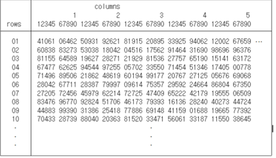
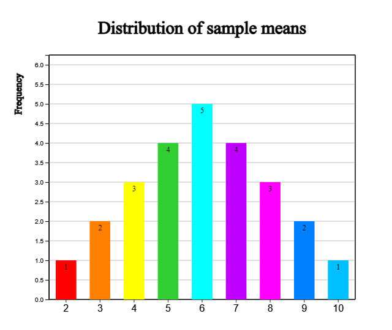

If the population of data becomes very large, it is difficult to obtain
the characteristic values such as the mean or variance. In this case,
estimating the characteristic of the population by taking an appropriate
number of samples from them is called a statistical estimation.
Making rational decision in uncertain situation using this estimate is
an important function of modern statistics.
4.1 Population and Sample
⭐ Think
A factory produces thousands of smartphones a day. If the tempered glass on the smartphone screen withstands the impact when it drops from a certain height and does not break, it passes the impact quality test.
üíé Explore
1) Will this factory conduct an impact test on all smartphones produced?
2) If it is difficult to investigate all smartphones, how should the impact quality test be conducted?
The quality test for smartphones which may cause a defective or breakage
in products cannot be conducted on all products. Therefore, a method of
selecting and investigating some of the products produced is usually chosen.
The entire data subject to a statistical survey are called the population,
and some of the population selected for the survey are called samples.
In general, the population is very large.
In order to find out the characteristic of the population such as the mean,
if you survey the entire population, it is called the total survey.
However, a total survey of all populations requires enormous costs and time.
In addition, a total survey is not appropriate if the product can be destroyed
during the inspection such as the impact quality test.
When such a total survey is difficult, the sample survey that investigates
some samples from the population is used. Estimating the characteristic
of the population using samples selected from the population is called
the inferential statistics.
üé≤ Example 4.1
Which survey method is more appropriate, a total survey or a sample survey, to investigate the followings?
1) The population born in Korea in 2020.
2) The approval rating of a particular candidate in a parliamentary election.
Solution
1) Since we need to know the exact value of the total number of baby born in 2020 although it might take time and costs, a total survey is more appropriate.
2) It takes a lot of time and effort to investigate the population to know the approval rating of a particular candidate in a parliamentary election. Also, the approval rating of a particular candidate should be known as soon as possible to establish an election strategy based on this result. Therefore, a sample survey is more appropriate.
⏱ Practice 4.1
Which method is more appropriate, a full survey or a sample survey, to investigate the followings?
1) The number of industrial accidents in 2020.
2) The rating of a TV program.
A. Sampling Method
⭐ Think
It was decided that the impact quality test of the smartphone is a sample survey.
üíé Explore
How should we select samples from the large number of smartphones produced per day?
When we estimate the characteristic of the population using samples, the result
may vary depending on how samples are selected, so many studies have been
conducted on the sampling method. In general, the most commonly used method
for sampling is the simple random sampling that ensures that each element
in the population has the same probability of being selected. Drawing lots
which is often used among friends is an example of a simple random sampling method.
✨ Simple random sampling
Each element in the population has the same probability of being selected.
When samples are selected from a population, there are two types of methods
such that one is 'with replacement' and the other is
'without replacement'. After a sample is selected, it is included
in the population again in case of 'with replacement' method. The selected
sample is not included in the population in case of 'without replacement'.
In general, random numbers are used a lot to ensure that each element in
the population has the same probability of being selected. Random numbers
are numbers that are scattered from 0 to 9 without any particular regularity
or bias. [Table 4.1] is a part of the random number table which arranges
these random numbers into rows and columns.
[Table 4.1] Random number table arranged in rows and columns

For example, there are 50 students in a class and their identification numbers
are 1, 2, ... and 50. In order to select three students of them randomly,
first select any one row and one column. If the row 3 and column 11 are selected,
read down the double digits starting from here which gives 19, 94, 21, and 28.
Among them, numbers outside of 1 to 50 are discarded and three students whose
numbers are 19, 21, and 28 are selected.
⏱ Practice 4.2
Seven students from our school created a hobby club and suppose each student
is numbered from 1 to 7. Select one chairperson of these seven students
using a random number in Table 4.1.
Simple random sampling using a random number table as shown above is not easy
to apply when the sample size is large. Recently random numbers generated
by computer using a uniform distribution are commonly used. <Figure 4.1>
shows 10 random numbers selected from 1 to 100 numbers without replacement
using 『eStatH』.
<Figure 4.1> Ten random numbers generated from Uniform(1,100)
By using 『eStatH』, you can also generate random numbers of integer-type Uniform
distribution \([a,b]\) with replacement, real-type Uniform distribution \([a,b]\),
normal distribution \(N(\mu, \sigma^2 )\), and two-dimensional normal distribution
\(N(\mu_1 , \mu_2, \sigma_1 , \sigma_2 , \rho )\).
üé≤ Example 4.2
A class has 50 students. Using 『eStatH』, select three students randomly without replacement.
(In practice, it is not necessary to select samples from a small population of 50, but it is an illustrative example.)
Solution
In order to take three samples out of 50 students, first make a list of students
and then assign identification numbers such as from 1 to 50. In order to select
three students, select the first option which is the integer uniform distribution
without replacement in 'Random Number Generator' of 『eStatH』, Enter (1, 50),
enter 3 for 'Number of Data n =' and click [Execute] button, then three random
numbers appear as in <Figure 4.2>.
[Random Number Generation]
<Figure 4.2> Random number generation of Uniform(1,50) distribution
⏱ Practice 4.3
A class has 30 students. Using 『eStatH』, select five students randomly without replacement.
4.2 Population Mean and Sample Mean
⭐ Think
We would like to investigate the height of all first-year high school male students.
üíé Explore
What is the relationship between the population mean of the height of the entire first-year high school male students and the sample mean of the height of 100 students from this population?
The purpose of statistical experiments or surveys is to find out the characteristics
of the population. The characteristics of the population such as the mean, variance,
and standard deviation are called the population mean, population variance and
population standard deviation denoted by \(\mu, \sigma^2, \sigma\) respectively.
When \(n\) samples are randomly selected from a population, their mean, variance,
and standard deviation are called as the sample mean, sample variance, and
sample standard deviation denoted by \(\overline X , S^2 , S\) respectively.
If \(X_1 , X_2 , ... , X_n \) represent random variables of samples,
\(\overline X , S^2 \) and \(S\) are defined as follows:
\(\overline X = \frac{1}{n}(X_1 + X_2 + \cdots + X_n)\)
\(S^2 = \frac{1}{n-1} \{ (X_1 - \overline X )^2 + (X_2 - \overline X )^2 + \cdots + (X_n - \overline X )^2 \} \)
\(S = \sqrt{S^2}\)
In the definition of the sample variance \(S^2\), division by \(n-1\) is to
estimate the population variance accurately, but its detail explanation can
be done in university level of statistics.
The actual observed values of the random variable \(X_1 , X_2 , ... , X_n \)
are denoted as \(x_1 , x_2 , ... , x_n \) and their sample mean, sample variance
and sample standard deviation are as follows:
\(\overline x = \frac{1}{n}(x_1 + x_2 + \cdots + x_n)\)
\(s^2 = \frac{1}{n-1} \{ (x_1 - \overline x )^2 + (x_2 - \overline x )^2 + \cdots + (x_n - \overline x )^2 \} \)
\(s = \sqrt{s^2}\)
For example, when three samples are taken from the first-year high school
male population, the possible number of three samples is countless,
so this is indicated as random variables \(X_1 , X_2 , X_3 \). If the actual
heights of the three selected students are 160cm, 170cm, and 180cm, these are
denoted as \(x_1 = 160, x_2 = 170, x_3 = 180\) and their sample mean, sample
variance and sample standard deviations are as follows:
<Figure 4.3> is a simulation that shows the relationship between the
characteristic value of the population and the characteristic value of the
sample when about 10% of the sample is randomly selected from 10,000 populations
of a standard normal distribution using 『eStatH』. Looking at the figure,
it can be seen that the minimum (min) and maximum (max) of the population
differ from the sample, but there is no significant difference between the
population mean and the sample mean.
[Population vs Sample]
<Figure 4.3> Simulation to show relation between population and sample
A. Distribution of all possible sample means
⭐ Think
There are five salesman of a company, and the length of time they worked for the company is as follows:
6, 2, 4, 8, 10 (unit year).
Suppose that these five employees are a population.
(Note: This small population doesn't really need to be sampled, but this is an example to illustrate the distribution of sample means.)
üíé Explore
If we select all possible samples of size 2 with replacement from the population, what is the relationship between the population mean and all possible sample means of each sample?
The population mean, variance and standard deviation are as follows:
The distribution of the population is the unform distribution as follows:
<Figure 4.4> Population distribution
If we select all possible samples of size 2 with replacement and denote two samples
as the random variables \(X_1\) and \(X_2\), the sample mean is a random variable
\(\overline X = \frac{1}{2} (X_1 + X_2 )\) and a possible value of the sample mean
of \(\overline X \) is \(\overline x \). The number of all possible sample means
of size 2 with replacement is \(5^2 = 25\) and each sample mean of the samples,
\(\overline x \), is as follows:
[Table 4.2] All possible samples of size 2 and their sample means from the population
The frequency table of these 25 sample means and its bar graph are as follows:
[Table 4.3] Frequency table of all possible sample means

<Figure 4.5> Distribution of all possible sample means
Looking at the frequency table of all possible sample means in [Table 4.3],
some of the sample means exactly match the population mean of 6, and others
differ greatly, such as 2 or 10. However, looking at <Figure 4.5>,
it can be seen that these sample means are concentrated around the population
mean of 6.
The average of the 25 sample means in {Table 4.2], \(E(\overline X)\), and
variance, \(V(\overline X)\), are as follows:
- The first is that the mean of all 25 possible sample means is equal to the population mean. This fact is called that the sample mean is the unbiased estimate of the population mean.
- The second is that the variance of all 25 possible sample means is the population variance divided by the size of the sample (=2).
- Third, when comparing the distribution of the population and the distribution of all possible sample means, the sample means are concentrated around the population mean of 6 and is symmetrical around the population mean.
This relationship between the population mean and all possible sample means is observed even if the population is large or has a different distribution form.
✨ Mean, variance and standard deviation of all possible sample means
When a population has the mean of \(\mu\), the variance of \(\sigma^2\), if you
select samples of size \(n\) randomly with replacement, the mean, variance and
standard deviation of the sample mean \(\overline X\) are as follows:
When you select randomly two of the numbers from 1 to 6, find the
distribution of the sample mean \(\overline X\) and find its mean,
variance and standard deviation.
⏱ Practice 4.5
When you select randomly samples of 100 people from a population with
the mean height of 170cm and population standard deviation of 10cm,
find the mean, variance, and standard deviation of the sample mean
\(\overline X\).
If a population follows the normal distribution of \(N(\mu , \sigma^2 )\),
the distribution of all possible samples of size \(n\) which are randomly
selected with replacement, the distribution of the sample mean \(\overline X\)
follows the normal distribution of \(N(\mu , \frac{\sigma^2}{n} )\). When
the distribution of the population does not follow a normal distribution,
if the sample size \(n\) is sufficiently large, the distribution of the sample
mean \(\overline X\) follows approximately the normal distribution of \(N(\mu , \frac{\sigma^2}{n} )\).
✨ Distribution of all possible sample means
When the population has the mean of \(\mu\) and variance of \(\sigma^2\), if you
select random samples of size \(n\) with replacement, the distribution of sample
mean \(\overline X\) is as follows:
1) If the population follows the normal distribution of \(N(\mu , \sigma^2 )\),
the distribution of the sample mean \(\overline X\) follows the normal
distribution of \(N(\mu , \frac{\sigma^2}{n} )\).
2) When the population does not follow a normal distribution, if the
sample size \(n\) is sufficiently large, the distribution of the sample mean
\(\overline X\) follows approximately the normal distribution of
\(N(\mu , \frac{\sigma^2}{n} )\).
The distribution of the sample mean is very important and it is the fundamental
basis of the inferential statistics. <Figure 4.6> is a simulation
in 『eStatH』 that shows how the distribution of sample mean varies depending on
the size of the sample when the population follows the normal distribution form.
Looking at the figure, as the sample size increases, the distribution of the
sample mean has the same mean as the population mean, the shape becomes a
normal distribution like, and the variance gradually becomes smaller and pointed.
This means that if the sample size is very large, the distribution of all
possible sample means will be concentrated around the population mean.
In other words, the sample mean we obtain is one of all possible sample means,
but it is close to the population mean, which is the basis for estimating
the population mean well by using any sample mean.
[Sampling Distribution of Sample Means]
<Figure 4.6> Simulation of possible sample means using 『eStatH』
üé≤ Example 4.3
It is said that the height of the first-year high school students follows a normal distribution with the mean of 170cm and standard deviation of 10cm. When you select samples of 100 students randomly, find the following probability.
\( {\overline X} \) is the random variable with the mean of 170, variance of
\(\frac{10^2}{100}\) = 1, standard deviation of 1 which follows the normal distribution of
\(N(170 , \frac{10^2}{100} )\).
It shows that the most of the sample mean located in the interval of
\(170 ± 2 × \frac{10}{\sqrt 100}\), that is [168, 172].
⏱ Practice 4.6
It is said that the length of bolts produced in one factory follows a normal distribution with the mean of 100mm and standard deviation of 2mm. When we select randomly 25 samples with replacement, find the following probability.
t is intended to estimate the average height of all first-year high school mail students. When 10 high school first-year male students were randomly selected and their heights were investigated, the sample mean was 170cm.
üíé Explore
Can I use the sample mean as an estimate of the mean height of the entire high school first-year male students?
When a sample survey is conducted, only one set of samples is taken from the population to estimate the population mean. In general, we think the mean of the samples as an estimate of the population mean, but can the sample mean obtained from one set of samples among countless possible set of samples predict the population mean well?
The sampling distribution of all possible sample means studied in the previous section is
the answer to this question. That is, no matter what a population distribution is,
if the sample size is large enough, all possible sample means become dense with a normal
distribution shape around the population mean. Therefore, the mean of a set of samples
we obtained is usually close to the population mean, and even in the worst case,
the difference from the population mean (referred to as an error) is not large,
so the sample mean can be said to be a good estimate of the population mean.
The larger the sample size, the more dense the distribution of the sample means is, near the population mean, so this error decreases.
The fact that one value of the observed sample mean is an estimate of the
population mean is called the point estimation of the population mean
(meaning that it is estimated as one number). The sample mean used to estimate
the population mean has several good characteristics. One characteristic examined
in the previous section is that the mean of all possible sample means becomes
to the population mean, and this characteristic is called the unbiased estimate.
Unlike the point estimation, estimating the population mean as an interval
is called the interval estimation. If the population is a normal
distribution with mean \(\mu\), variance \(\sigma^2\), the distribution of
the sample mean \(\overline X\) is the normal distribution with mean \(\mu\)
and variance \(\frac{\sigma^2}{n}\), so the probability that one sample mean
will be included in the interval \(\mu ± 1.96 \frac{\sigma}{\sqrt{n}}\) is 95% as follows:
$$
P ( \mu - 1.96 \frac{\sigma}{\sqrt{n}} \le \overline X \le \mu + 1.96 \frac{\sigma}{\sqrt{n}} ) = 0.95
$$
This equation can also be written as follows:
$$
P ( \overline X - 1.96 \frac{\sigma}{\sqrt{n}} \le \mu \le \overline X + 1.96 \frac{\sigma}{\sqrt{n}} ) = 0.95
$$
The meaning of this equation is that 95% of all possible intervals obtained
by applying the following interval formula (assuming that \(\sigma\) is known)
to all possible sample means include the population mean \(\mu\). The
following interval formula is called the 95% confidence interval of
the population mean.
$$
[ \overline X - 1.96 \frac{\sigma}{\sqrt{n}} , \overline X + 1.96 \frac{\sigma}{\sqrt{n}} ]
$$
In general, since \( \overline X ≈ N(\mu , \frac{\sigma^2}{n} )\), the
standardized random variable of \(\overline X\), that is
\( Z = \frac{\overline X - \mu}{\frac{\sigma}{\sqrt n}} \) follows \( N(0,1) \).
Therefore we can write the following probability statement.
$$
P ( - z_{\alpha / 2} \le \frac{ \overline X - \mu} {\frac{\sigma}{\sqrt{n}}} \le z_{\alpha /2} ) = 1- \alpha
$$
The left hand side of the aboe equation can also be written as follows:
$$
P ( \mu - z_{\alpha /2 } \frac{\sigma}{\sqrt{n}} \le \overline X \le \mu + z_{\alpha /2 } \frac{\sigma}{\sqrt{n}} ) = 1- \alpha
$$
(1-\(\alpha\)) is called the confidence level, that refers to the
probability of intervals in which the population mean is included among all
intervals calculated by this interval formula. Usually, 0.01 or 0.05 is used
for \(\alpha\). \(z_{\alpha}\) implies a value with a probability at the right end
of the standard normal distribution. In other words, if \(Z\) is a random
variable that follows the standard normal distribution, the probability
that \(Z\) is greater than \(z_{\alpha}\) is \(\alpha\), and if expressed
by an equation, \(P(Z \ge z_{\alpha} ) = \alpha \) is established. For example,
\(z_{0.025}\) = 1.96, \(z_{0.005}\) = 2.575, etc. Therefore, the 99% confidence
interval formula of the population mean is as follows:
$$
[ \overline X - 2.575 \frac{\sigma}{\sqrt{n}} , \overline X + 2.575 \frac{\sigma}{\sqrt{n}} ]
$$
<Figure 4.7> shows 95% confidence intervals for the population mean
by randomly selecting 100 sets of samples with the sample size \(n = 20\)
from 10,000 population data which follow the standard normal distribution.
In this case, only 94 out of 100 confidence intervals contain the population
mean of 0. Whenever these experiments are repeated, results can vary slightly.
This simulation shows that, when estimating the confidence interval of the
population mean several times, the confidence interval by using the above
formula includes the population mean approximately to the confidence level.
[Confidence Interval Experiment]
<Figure 4.7> Simulation of 95% confidence interval using 『eStatH』
When a population follows the normal distribution with the mean \(\mu\) and
variance \(\sigma^2\) which is known, the confidence interval for the population
mean \(\mu\) with the confidence level of \(1-\alpha\) is as follows:
✨ Interval estimation of \(\mu\) with \(1-\alpha\)% confidence level
When the population follows the normal distribution with the mean \(\mu\) and
variance \(\sigma^2 \) which is known, 100\(1-\alpha\)% confidence interval
for \(\mu\) is as follows:
$$
[ \overline X - z_{\alpha/2} \frac{\sigma}{\sqrt{n}} , \overline X + z_{\alpha/2} \frac{\sigma}{\sqrt{n}} ]
$$
95% confidence interval for \(\mu\): \(\quad [ \overline X - 1.96 \frac{\sigma}{\sqrt{n}} , \overline X + 1.96 \frac{\sigma}{\sqrt{n}} ] \)
99% confidence interval for \(\mu\): \(\quad [ \overline X - 2.575 \frac{\sigma}{\sqrt{n}} , \overline X + 2.575 \frac{\sigma}{\sqrt{n}} ] \)
üé≤ Example 4.4
The height of all first-year high school male students in Korea follows the normal distribution and the population standard deviation is known to be 10cm. When 100 high school first-year male students were randomly selected and their heights were investigated, the sample mean was 170cm. About the mean height of male students in the first year of high school, answer the followings.
1) Find the 95% confidence interval.
2) Find the 99% confidence interval.
3) When the sample size is 400, if the sample mean is 170cm, find the 95% confidence interval. Compare this confidence interval with the confidence interval in 1).
Solution
1) If the confidence level is 95％, \(\alpha\) = 0.05. Therefore,
\(z_{\alpha/2} = z_{0.05/2} = z_{0.025} = 1.96\)
The 95％ confidence interval is as follows:
\([ \overline X - 1.96 \frac{\sigma}{\sqrt{n}} , \overline X + 1.96 \frac{\sigma}{\sqrt{n}} ] \)
Therefore, as the sample size increases, the width of the confidence interval narrows. In other words, it is a more accurate estimation.
Using 『eStatH』, select 'Population Mean Confidence Interval' from 『eStatH』 menu, enter
'Sample size', 'Sample Mean', [Population Standard Deviation] and
select the confidence level as shown in <Figure 4.8>. If you click
[Execute] button, the confidence interval is calculated and the interval
is drawn on the graph window. Under the interval graph, there is
a simulation window that can adjusts the sample size and confidence level.
⏱ Practice 4.7
It is said that the length of bolts produced in a factory follows a normal distribution with the population standard deviation of 2mm. If the sample mean is 101mm when 25 samples are randomly selected, answer the followings.
1) Find a 95% confidence interval of the population mean of the bolt length.
2) Find a 99% confidence interval of the population mean of the bolt length.
3) Compare the widths of the two confidence intervals.
üé≤ Example 4.5
The height of all first-year high school male students follows the normal distribution with the population standard deviation of 10cm. Ten high school first-year male students were randomly selected and their heights were investigated as follows:
171, 172, 185, 169, 175, 177, 174, 179, 168, 173
Using 『eStatH』, answer the followings about the mean height of male students in the first grade of high school.
1) Find the 95% confidence interval.
2) Find the 99% confidence interval.
3) Compare the above two confidence intervals.
Solution
If there are data of samples, it is easy to estimate the population mean
by using 『eStatH』. Select 'Population Mean Confidence Interval' from
『eStatH』 menu, enter the data as shown in <Figure 4.8>, and click
[Execute] button to calculate the 95% confidence interval.
If you select the 99% confidence level and click [Execute], the 99% confidence interval is calculated.
Under the interval graph, there is a simulation window that can adjusts the sample size and confidence level.
[ ]
<Figure 4.8> Interval estimation of population mean using sample data in 『eStatH』
⏱ Practice 4.8
It is said that the length of bolts produced in a factory follows the normal distribution with the population standard deviation of 2mm. The data obtained by randomly extracting 20 samples are as follows:
99 101 102 99 102 101 100 97 99 98
103 97 106 100 99 106 101 98 101 97
Using 『eStatH』, answer the followings.
1) Find the 95% confidence interval of the mean length of the bolts.
2) Find the 99% confidence interval of the mean length of the bolts.
3) Investigate the change in confidence interval according to the confidence level and sample size.